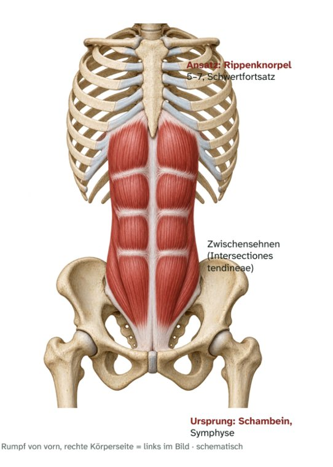

Bauchmuskeln · vorn
M. rectus abdominis
Gerader Bauchmuskel – Ursprung, Ansatz, Innervation und Funktion

Steckbrief
Steckbrief
- Ursprung
- Schambeinkamm (Crista pubica), Symphyse
- Ansatz
- Rippenknorpel 5–7, Schwertfortsatz (Proc. xiphoideus)
- Innervation
- Nn. intercostales (Th6–Th11), N. subcostalis (Th12)
Funktion
- Rumpf: kräftigster Rumpfbeuger – zieht Brustkorb und Becken zueinander.
- Bauchpresse und verstärkte Ausatmung.
- Becken: richtet das Becken auf (hinten kippen) und wirkt so einem Hohlkreuz entgegen.
Zum Lernen

E-Book · Band 3 · 19,90 €
Muskel-Atlas Rumpf & Hals
Im E-Book findest du zu diesem Muskel außerdem:
- Merkhilfe und typische Prüfungsfalle
- Muskelfunktionstest, Längentest und Übungen per Video-QR-Code
- Dehn- und Kräftigungsübung
- Kurz-Check mit drei Fragen und Lösungen
Weitere Muskeln: Bauchmuskeln
- 02VideoM. obliquus externus abdominisÄußerer schräger Bauchmuskel · Bauchmuskeln
- 03VideoM. obliquus internus abdominisInnerer schräger Bauchmuskel · Bauchmuskeln
- 04VideoM. transversus abdominisQuerer Bauchmuskel · Bauchmuskeln
- 05VideoM. quadratus lumborumViereckiger Lendenmuskel · Bauchmuskeln
- 06VideoM. cremasterHodenheber · Bauchmuskeln